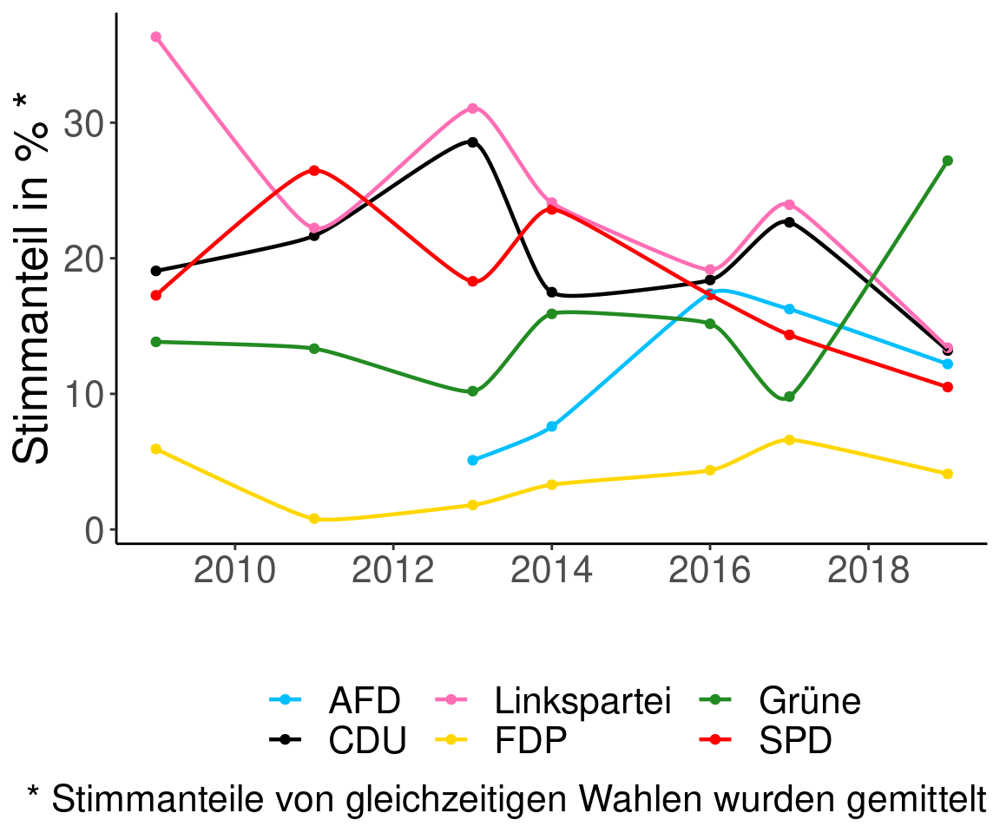
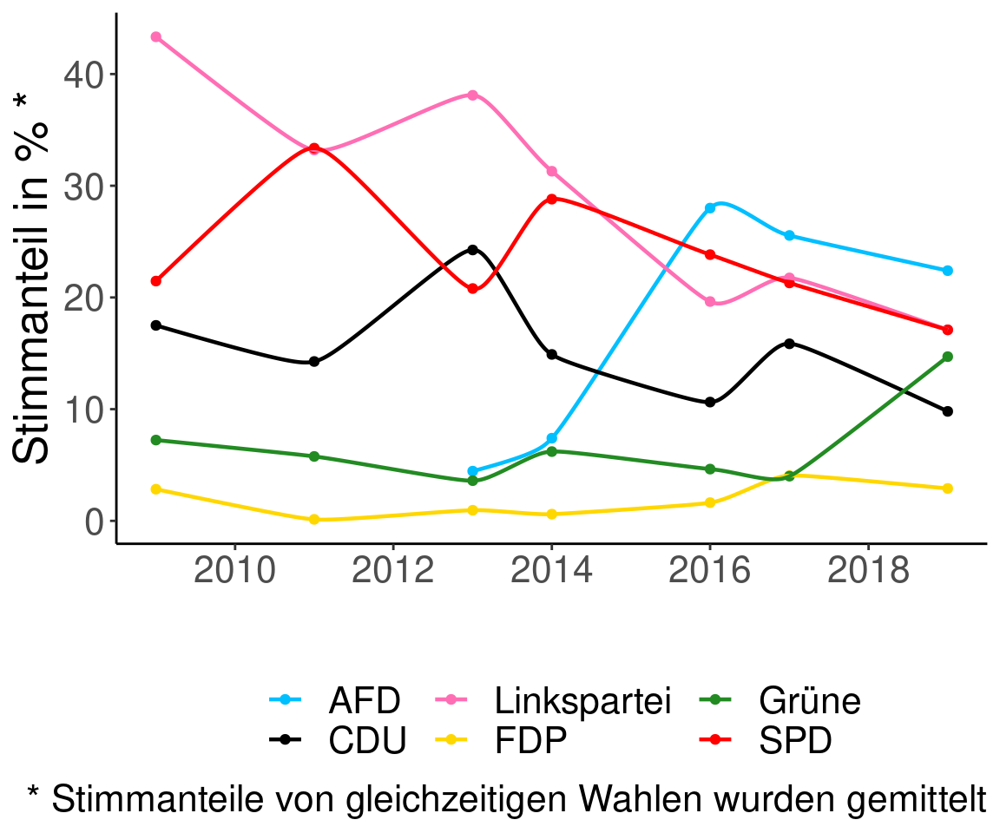
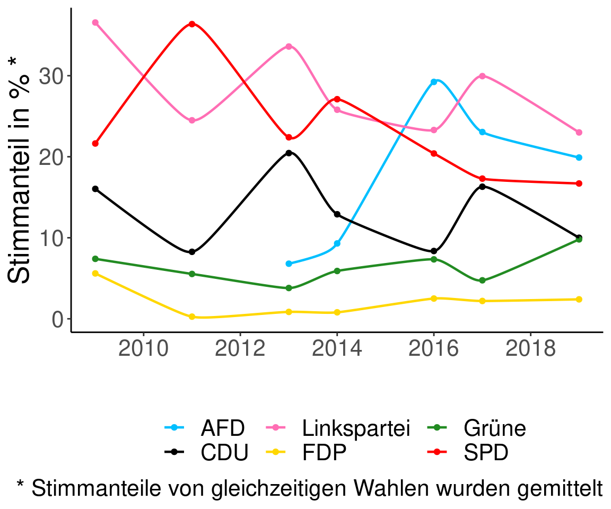

Grüne Wahlergebnisse
1
Einleitung
1.1
Ziel
1.2
Datenquelle
1.3
Karten
1.4
Methoden
1.5
Limitationen
2
Wahlkarten
2.1
EU-Wahl 2019
2.2
Bundestagswahl Erststimme 2017
2.3
Bundestagswahl Zweitstimme 2017
2.4
BVV-Wahl 2016
2.5
AGH Erststimme 2016
2.6
AGH Zweitstimme 2016
2.7
EU-Wahl 2014
2.8
Bundestagswahl Erststimme 2013
2.9
Bundestagswahl Zweitstimme 2013
2.10
BVV-Wahl 2011
2.11
AGH Erststimme 2011
2.12
AGH Zweitstimme 2011
2.13
EUwahl 2009
2.14
Bundestagswahl Erststimme 2009
2.15
Bundestagswahl Zweitstimme 2009
3
Zeitverläufe
3.1
Entwicklung der Wahlergebnisse der großen Parteien in Pankow 2009 bis 2019
4
Monthly Air Quality Graphs
4.0.1
May Air Quaility
4.0.2
June Air Quaility
4.0.3
July Air Quaility
4.0.4
August Air Quaility
4.0.5
September Air Quaility
5
Zusammenhänge
5.1
Wie hängt das Alter mit den Wahlergebnissen der Grünen zusammen?
5.2
Altesmittelwert der Wahlbezirke
5.3
Wie hängt die Wohnlage mit den Wahlergebnissen der Grünen zusammen?
5.3.1
Gute Wohnlage
5.3.2
Einfache Wohnlage
5.4
Wie hängt Lärm und das Wahlergebnis der Grünen zusammen?
5.5
Anteil der Wohnlagen mit Lärm pro Wahlbezirk als Karte
6
Potentialanalyse
6.1
“Wobble”-Bezirke
6.2
Differenez der Erst- und Zweitstimmen bei der Bundestagswahl 2009
6.3
Differenez der Erst- und Zweitstimmen bei den Wahlen zum Abgeordnetenhaus 2011
6.4
Differenez der Erst- und Zweitstimmen bei der Bundestagswahl 2013
6.5
Differenez der Erst- und Zweitstimmen bei den Wahlen zum Abgeordnetenhaus 2016
6.6
Differenez der Erst- und Zweitstimmen bei der Bundestagswahl 2017
Published with bookdown
Wahlergebnisse der Berliner Grünen
Kapitel 4
Monthly Air Quality Graphs
4.0.1
May Air Quaility

4.0.2
June Air Quaility
4.0.3
July Air Quaility
4.0.4
August Air Quaility

4.0.5
September Air Quaility
